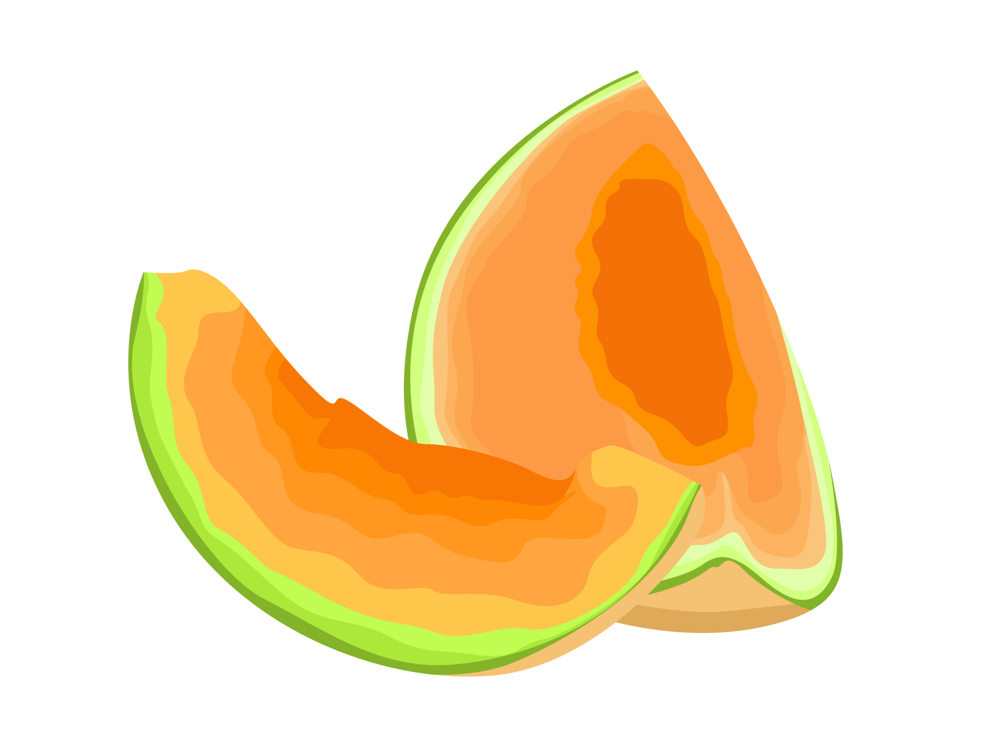

Há registro de seu cultivo no Egito e no Irã desde cerca de 2.500 a.C. Sua origem ainda é motivo de controvérsia entre os pesquisadores. Enquanto alguns o situam na Índia e no Irã, outros acreditam que o centro de origem do melão se situe na África.
